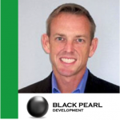

IoTLive #002
Open Menu
Home
Sessions
Program – Panel Sessions
Program – Keynotes
Program – Demos
Speakers & Sponsors
Watch / Videos
Past Events
#001
Contact
Home
Sessions
Program – Panel Sessions
Program – Keynotes
Program – Demos
Speakers & Sponsors
Watch / Videos
Past Events
#001
Contact
|
Program – Panel Sessions
IoT Live Panel Sessions
Day 1
09 Apr 2015
9:15-10:15 EST
(1515-1615 CEST)
Tom Berarducci
Doug Standley
Glen Allmendinger
James Branigan
Hans Rempel
Panel 1 – The Evolution of IoT Platforms
//
Tom Berarducci
Doug Standley
Glen Allmendinger
James Branigan
Hans Rempel
10:15 - 10:25 EST
10 Min – INTERMISSION
10:25-11:25 EST
(1625-1725 CEST)
Eugene Mazo
Alex Glaser
Alex Duncan
Philip DesAutels
Adam Dunkels
Panel 2 – IoT Development Tools
//
Eugene Mazo
Alex Glaser
Alex Duncan
Philip DesAutels
Adam Dunkels
12:20 - 13:30 EST
(1820-1930 CEST)
Troy Foster
Arlen Nipper
Glen Allmendinger
Nicola De Carne
Mike Fahrion
Panel 3 – Market Development for Industrial, Mission Critical and Related Segment Applications
//

Troy Foster
Arlen Nipper
Glen Allmendinger
Nicola De Carne
Mike Fahrion
13:35-14:45 EST
(1935-2045 CEST)
Charles Wheeler
Paul Roberts
Chris Rouland
Don Bailey
Panel 4 – How Should We Really Be Addressing Security?
//
Charles Wheeler
Paul Roberts
Chris Rouland
Don Bailey
16:15-17:50 EST
(2215-2350 CEST)
Zatar – Zebra Technologies
Glassbeam
PubNub
Crowsnest
IoT Demo Sessions
//
Zatar – Zebra Technologies
Glassbeam
PubNub
Crowsnest